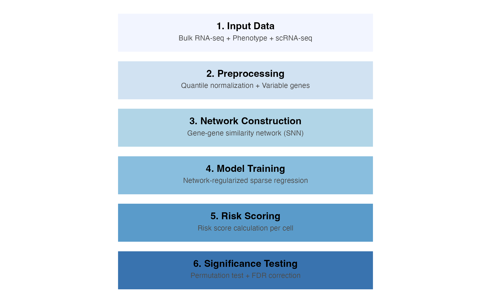
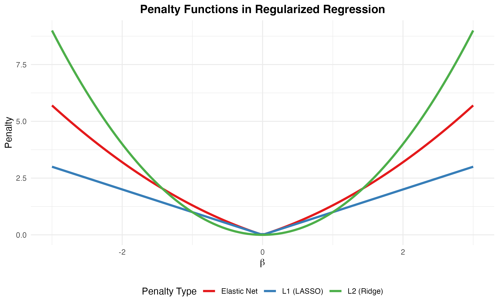
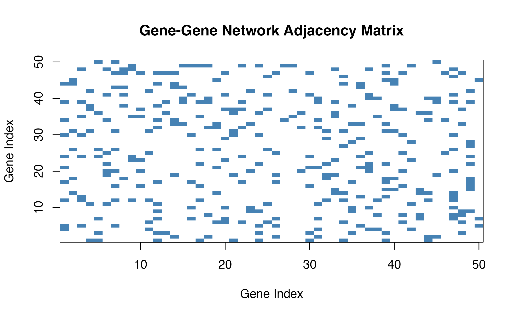
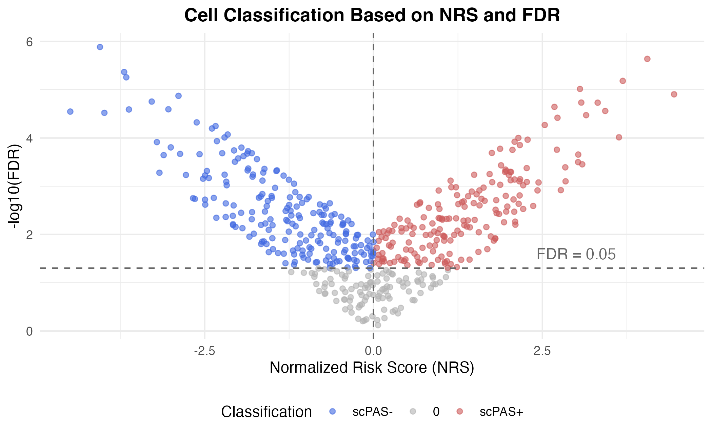

Algorithm and Methodology
Zaoqu Liu
Department of Interventional Radiology, The First Affiliated Hospital of Zhengzhou Universityliuzaoqu@163.com
Aimin Xie
Original Authoraiminyy1993@gmail.com
2026-01-23
Source:vignettes/algorithm.Rmd
algorithm.RmdOverview
scPAS identifies phenotype-associated cell subpopulations through a multi-step computational pipeline that integrates bulk and single-cell RNA-seq data.

scPAS Workflow Overview
Mathematical Framework
Problem Formulation
Given:
- Bulk expression matrix (n samples × p genes)
- Phenotype vector (continuous, binary, or survival)
- Single-cell expression matrix (m cells × p genes)
The goal is to find gene weights that associate gene expression with phenotype, then apply these weights to single-cell data to compute per-cell risk scores.
Network-Regularized Sparse Regression
scPAS uses the APML0 (Augmented and Penalized Minimization L0) algorithm with network regularization:
Where:
- is the loss function (depends on phenotype type)
- is the L1 penalty (LASSO) for sparsity
- is the Laplacian penalty for network regularization
- is the Laplacian matrix of the gene-gene network

Effect of Network Regularization
Gene Network Construction
Shared Nearest Neighbor (SNN) Network
scPAS constructs a gene-gene similarity network from single-cell data using the SNN algorithm:

SNN Network Construction
The network construction process:
- Calculate gene correlations from single-cell expression
- Find k-nearest neighbors for each gene
- Compute SNN similarity based on shared neighbors
- Threshold to create binary adjacency matrix
Risk Score Calculation
Statistical Significance Testing
Cell Classification
Cells are classified based on:
- Statistical significance: FDR < threshold (default 0.05)
- Direction of association: Sign of normalized risk score
| Category | Criteria |
|---|---|
| scPAS+ | FDR < 0.05 AND NRS > 0 |
| scPAS- | FDR < 0.05 AND NRS < 0 |
| 0 | FDR ≥ 0.05 |

Cell Classification Scheme
Implementation Details
Sparse Matrix Operations
scPAS uses efficient sparse matrix operations for large-scale single-cell data:
# Efficient correlation calculation for sparse matrices
sparse.cor <- function(x) {
# Uses optimized algorithm that avoids dense conversion
# Handles numerical precision issues
# Returns proper correlation matrix
}
# Efficient row scaling
sparse_row_scale <- function(x, center = TRUE, scale = TRUE) {
# Row-wise standardization
# Preserves sparsity when only scaling (not centering)
}Parallel Computing
For large permutation counts, scPAS supports parallel processing:
result <- scPAS(
bulk_dataset = bulk_data,
sc_dataset = sc_obj,
phenotype = phenotype,
permutation_times = 5000,
n_cores = 4 # Use 4 CPU cores
)References
Original scPAS Paper: Xie A, et al. (2024). scPAS: single-cell phenotype-associated subpopulation identifier. Briefings in Bioinformatics, 26(1):bbae655.
Network-Regularized Regression: Zou H, Hastie T. (2005). Regularization and variable selection via the elastic net. JRSS-B, 67(2):301-320.
Permutation Testing: Westfall PH, Young SS. (1993). Resampling-Based Multiple Testing. Wiley.
Session Information
sessionInfo()
#> R version 4.4.0 (2024-04-24)
#> Platform: aarch64-apple-darwin20
#> Running under: macOS 15.6.1
#>
#> Matrix products: default
#> BLAS: /Library/Frameworks/R.framework/Versions/4.4-arm64/Resources/lib/libRblas.0.dylib
#> LAPACK: /Library/Frameworks/R.framework/Versions/4.4-arm64/Resources/lib/libRlapack.dylib; LAPACK version 3.12.0
#>
#> locale:
#> [1] C
#>
#> time zone: Asia/Shanghai
#> tzcode source: internal
#>
#> attached base packages:
#> [1] stats graphics grDevices utils datasets methods base
#>
#> other attached packages:
#> [1] Matrix_1.7-4 ggplot2_4.0.1
#>
#> loaded via a namespace (and not attached):
#> [1] gtable_0.3.6 jsonlite_2.0.0 dplyr_1.1.4 compiler_4.4.0
#> [5] tidyselect_1.2.1 dichromat_2.0-0.1 jquerylib_0.1.4 systemfonts_1.3.1
#> [9] scales_1.4.0 textshaping_1.0.4 yaml_2.3.12 fastmap_1.2.0
#> [13] lattice_0.22-7 R6_2.6.1 labeling_0.4.3 generics_0.1.4
#> [17] knitr_1.51 htmlwidgets_1.6.4 tibble_3.3.1 desc_1.4.3
#> [21] bslib_0.9.0 pillar_1.11.1 RColorBrewer_1.1-3 rlang_1.1.7
#> [25] cachem_1.1.0 xfun_0.56 fs_1.6.6 sass_0.4.10
#> [29] S7_0.2.1 otel_0.2.0 cli_3.6.5 pkgdown_2.1.3
#> [33] withr_3.0.2 magrittr_2.0.4 digest_0.6.39 grid_4.4.0
#> [37] lifecycle_1.0.5 vctrs_0.7.0 evaluate_1.0.5 glue_1.8.0
#> [41] farver_2.1.2 ragg_1.5.0 rmarkdown_2.30 tools_4.4.0
#> [45] pkgconfig_2.0.3 htmltools_0.5.9